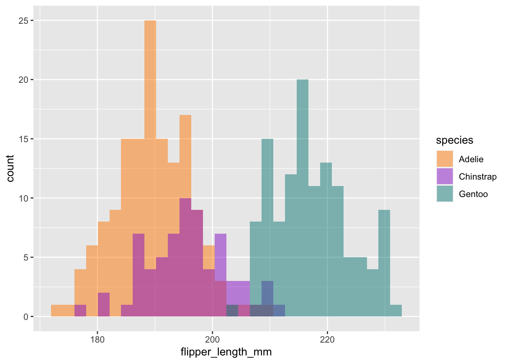

knitr::opts_chunk$set(fig.path = "figs/", collapse = TRUE)woot
Yay fontawesome works.
library(tidyverse)
## ── Attaching packages ─────────────────────────────────────── tidyverse 1.3.1 ──
## ✓ ggplot2 3.3.5 ✓ purrr 0.3.4
## ✓ tibble 3.1.6 ✓ dplyr 1.0.7
## ✓ tidyr 1.1.4 ✓ stringr 1.4.0
## ✓ readr 2.0.2 ✓ forcats 0.5.1
## ── Conflicts ────────────────────────────────────────── tidyverse_conflicts() ──
## x dplyr::filter() masks stats::filter()
## x dplyr::lag() masks stats::lag()
library(palmerpenguins)ggplot(data = penguins, aes(x = flipper_length_mm)) +
geom_histogram(aes(fill = species), alpha = 0.5, position = "identity") +
scale_fill_manual(values = c("darkorange","darkorchid","cyan4"))
## `stat_bin()` using `bins = 30`. Pick better value with `binwidth`.
## Warning: Removed 2 rows containing non-finite values (stat_bin).